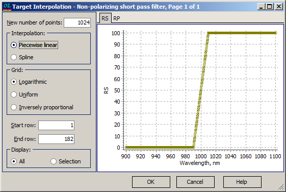

Target Interpolation
Target Interpolation
Navigation: OptiLayer Menu Commands > Data Menu > Target Editor >
Target Interpolation
` <numberofspectralpointsest.html>`__ ` <target_editor.html>`__ ` <idh_target_qualifier.html>`__
The Target Interpolation dialog allows you to increase or decrease the number of spectral points in a Target.

It is possible to set the new number of spectral points, type of interpolation, type of the spectral grid, start and end rows for interpolation operation, and adjust the display type. In the right pane, the preview of the possible interpolation operation is displayed instantly. After pressing the OK button, interpolation will be performed on the selected area of the current Target (its name is displayed in the caption of the Target Interpolation dialog).